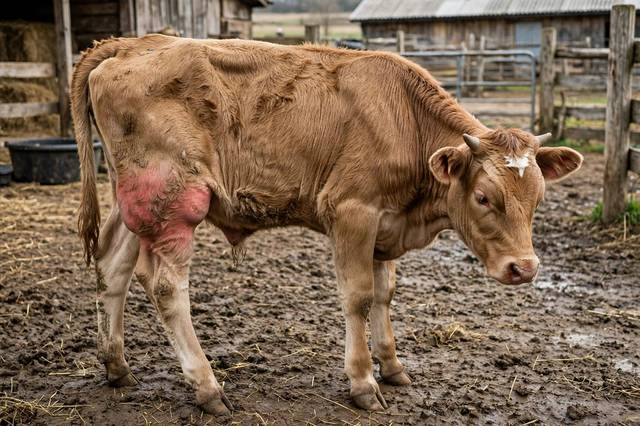

Black quarter, also called blackleg, is an acute and often fatal bacterial disease of cattle. It is commonly associated with Clostridium chauvoei, a spore-forming bacterium found in the environment. The disease often affects young, well-grown cattle and may occur without a visible wound.
On this page: clinical signs, causes and transmission, diagnosis, treatment principles and prevention.
Clinical Signs
1
Fever(Sudden high body temperature)
2
Depression(Dullness and low spirits)
3
Loss of Appetite(Refusal to eat)
4
Painful Muscle Swelling(Hot swelling in limbs, hip or shoulder; crackling feel from gas in tissues)
5
Lameness(Difficulty in walking)
6
Reluctance to Move(Unwilling to walk or stand)
7
Sudden Death(Rapid progression; death in severe cases)
FeverDepressionLoss of Appetite

Painful Muscle SwellingLamenessReluctance to MoveSudden Death
Causes and Transmission
Cattle ingest spores from contaminated soil or feed. Spores can remain in the environment for long periods. After entering tissues, conditions such as muscle damage may allow spores to germinate and produce toxins. The disease is not reliably prevented by routine wound cleaning alone.
Pathogenesis
Spores of Clostridium chauvoei are ingested from contaminated soil or feed, pass through the gut wall into the bloodstream and lodge in muscle and other tissues, where they remain dormant. Bruising or muscle injury lowers the local oxygen level, allowing the spores to germinate and multiply.
The bacteria release toxins that destroy muscle tissue and produce gas, causing the characteristic swollen, gas-filled (crepitant) muscle lesions. Toxins absorbed into the bloodstream cause severe toxaemia, rapid deterioration and often sudden death.
Veterinary Diagnosis
The veterinarian considers age, sudden onset, characteristic muscle swelling and local history. Post-mortem examination and laboratory testing may support confirmation. Carcasses suspected of blackleg should not be opened casually because this can contaminate the environment with spores.
Differential Diagnosis
Several conditions can look similar. A veterinarian distinguishes them by the signs, history and laboratory findings:
Anthrax — also causes sudden death, but without crepitant muscle swelling; bloody discharges and blood that does not clot are typical.
Malignant oedema — a clostridial infection causing soft, oedematous swelling, often at a wound, with less gas in the muscle.
Haemorrhagic septicaemia — causes sudden death with a hot, painful throat swelling and respiratory signs, but no gas-filled muscle lesions.
Lightning strike or snakebite — can cause sudden death without any muscle lesions or swelling.
Treatment and Case Management
Treatment is often unsuccessful once advanced signs develop because progression can be extremely rapid. Very early veterinary intervention may include appropriate antimicrobials and supportive care, but prognosis is guarded. Follow veterinary and public-health instructions for carcass handling and disposal.
Important: Sudden painful muscle swelling, severe lameness or unexpected death in young cattle warrants urgent veterinary investigation. Keep dogs, scavengers and people away from a suspect carcass.
Recommended Medicines
1
Antibiotic – Procaine penicillin G(For the bacterial infection)22,000 IU/kg IM once daily
2
NSAID – Meloxicam(For pain and fever)0.5 mg/kg IV/SC once
3
Supportive care – Multivitamins(To support recovery)10 ml IM daily
⚠ Important Tips:
Use antibiotics only under veterinary advice.
Blackleg progresses very fast — call a veterinarian at the first sign of painful swelling.
Keep dogs, scavengers and people away from a suspect carcass.
Vaccinate young cattle against blackleg as advised by your veterinarian.
Injection — vet-administered onlyMedicines — only as prescribed by a veterinarian
Prevention and Farm Management
Use a locally approved clostridial vaccination programme and follow label instructions for primary doses and boosters
Vaccinate calves at the age recommended by the product and local veterinarian
Avoid unnecessary soil contamination of feed and water
Investigate sudden deaths with veterinary authorities
Dispose of suspected carcasses according to local biosecurity rules; do not open them on the farm
Key Takeaway
Vaccination is the main preventive tool; rapid recognition and safe carcass management reduce further environmental contamination.
Keep herd health records, consult a qualified veterinarian and follow the animal-health authority's current guidance for your region.
References
MSD Veterinary Manual. Merck & Co., Inc.
Radostits, O.M., Gay, C.C., Hinchcliff, K.W., Constable, P.D. Veterinary Medicine: A Textbook of the Diseases of Cattle, Horses, Sheep, Pigs and Goats.
WOAH (World Organisation for Animal Health). Manual of Diagnostic Tests and Vaccines for Terrestrial Animals.
WOAH (World Organisation for Animal Health). Terrestrial Animal Health Code.
Frequently Asked Questions
What are the symptoms of black quarter in cattle?
Sudden fever, depression and loss of appetite, with painful swelling in large muscle groups, often the limbs, hip or shoulder. The swelling may feel hot and later develop a crackling sensation from gas in the tissues. Affected cattle become lame, refuse to move, and the disease can progress rapidly to sudden death.
What causes blackleg in cattle?
Blackleg is caused by Clostridium chauvoei, a spore-forming bacterium found in soil. Cattle ingest the spores from contaminated soil or feed, and the spores can remain in the environment for long periods. Muscle damage may allow the spores to germinate and produce toxins.
How is black quarter in cattle treated?
Treatment is often unsuccessful once advanced signs develop because the disease progresses extremely rapidly. Very early veterinary intervention may include appropriate antimicrobials and supportive care, but the prognosis is guarded. Contact a veterinarian immediately if black quarter is suspected.
How can blackleg in cattle be prevented?
Vaccination is the main preventive tool. Use a locally approved clostridial vaccination programme and follow label instructions for primary doses and boosters, and vaccinate calves at the age recommended by the product and your local veterinarian. Avoid unnecessary soil contamination of feed and water.
Is black quarter contagious between cattle?
Black quarter is not spread directly between animals; cattle pick up spores from contaminated soil or feed. However, carcasses of animals suspected of blackleg should not be opened on the farm, because this can contaminate the environment with spores. Follow veterinary instructions for safe carcass disposal.
How to treat blackleg in cattle?
Treatment often fails once advanced signs develop, because blackleg progresses extremely fast. Very early veterinary intervention may help, but the prognosis is guarded, so contact a veterinarian immediately if blackleg is suspected.
What is black quarter vaccine for cattle?
Vaccination is the main way to prevent black quarter. Use a locally approved clostridial vaccination programme, follow label instructions for primary doses and boosters, and vaccinate calves at the age your local veterinarian recommends.
گائے میں بلیک کوارٹر (Blackleg) کی علامات کیا ہیں؟
اچانک بخار، سستی اور بھوک کم ہو جانا، اور بڑے پٹھوں میں دردناک سوجن بلیک کوارٹر کی علامات ہیں۔ سوجن گرم محسوس ہوتی ہے اور بعد میں اس میں چٹخنے جیسی کیفیت آ سکتی ہے۔ جانور لنگڑا ہو جاتا ہے اور بیماری بہت تیزی سے بڑھ کر موت کا سبب بن سکتی ہے، اس لیے فوراً ویٹرنری ڈاکٹر سے رابطہ کریں۔
اردو خلاصہ — کسانوں کے لیے آسان الفاظ میں
یہ بیماری کیا ہے؟
یہ ایک خطرناک جراثیمی بیماری ہے جو زیادہ تر جوان اور صحت مند مویشیوں کو ہوتی ہے۔ اس کے جراثیم مٹی میں موجود ہوتے ہیں اور بیماری اچانک شروع ہو کر جان لیوا ثابت ہو سکتی ہے۔
اہم علامات
تیز بخار
پٹھوں میں دردناک سوجن
لنگڑاہٹ اور چلنے سے انکار
بھوک ختم اور سستی
اچانک موت
فوری علاج اور احتیاط
بیماری بہت تیزی سے بڑھتی ہے، اس لیے دردناک سوجن نظر آتے ہی فوراً ڈاکٹر کو بلائیں
آخری مرحلے پر علاج اکثر کامیاب نہیں ہوتا، اس لیے ویکسین ہی اصل بچاؤ ہے
بچھڑوں کو مقررہ عمر پر کلوسٹریڈیل ویکسین ضرور لگوائیں
مرے ہوئے مشتبہ جانور کو فارم پر نہ کھولیں اور محکمے کی ہدایت کے مطابق تلف کریں
درست تشخیص اور خوراک کے لیے اپنے ویٹرنری ڈاکٹر سے رابطہ کریں۔
✍️ Written by Dr. Shahid Bilal Depal, DVM (PVMC RVMP #15068)
This guide is for educational purposes. Consult a registered veterinarian for diagnosis and treatment.